Estadisticos
Estadisticos
9.-
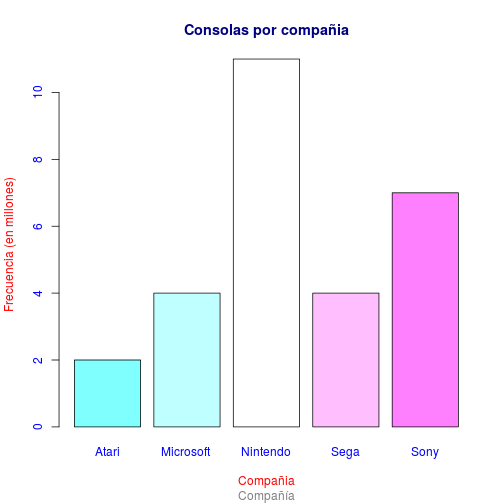
11.-
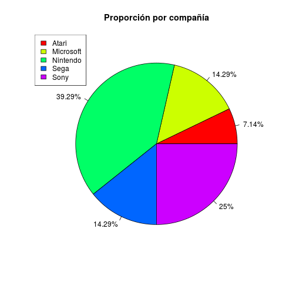
-
a) Cuál es la empresa con mayor mercado y con cuál porcentaje
-
Nintendo 39.29%
-
b) Cuál es la empresa con menor mercado y con cuál porcentaje
-
Atari con 7.14%
12.-
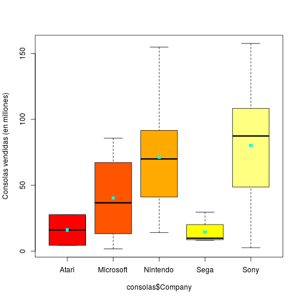
-
14.- a) Qué empresa ha vendido la consola con más éxito y cuál tiene la posición (más baja)
- Sony ha vendido la consola con más éxito
- Sega tiene la posición más baja
15.- Se puede observar que las 2 mejores empresas en cuanto a ventas son Sony y Nintendo, entonces nosotros invertiriamos en estas dos empresas
16 y 17.-
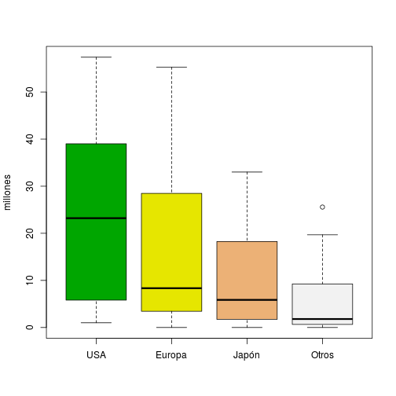
18.-
-
a) Si una consola vende 10 millones de unidades, en cuál cuartil se encuentra por región
-
USA= primer cuartil
-
Europa= segundo cuartil
-
Japón= segundo cuartil
-
Otros= segundo cuartil
-
b)En que región/país se ha vendido la mayor cantidad de una sólo consola
-
En USA se ha vendido la mayor cantidad de consolas
20.-
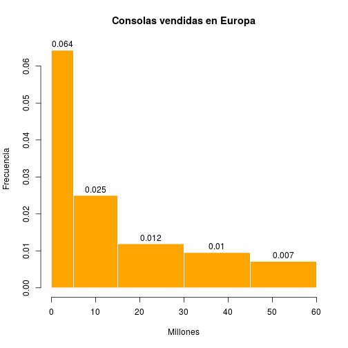
21.-
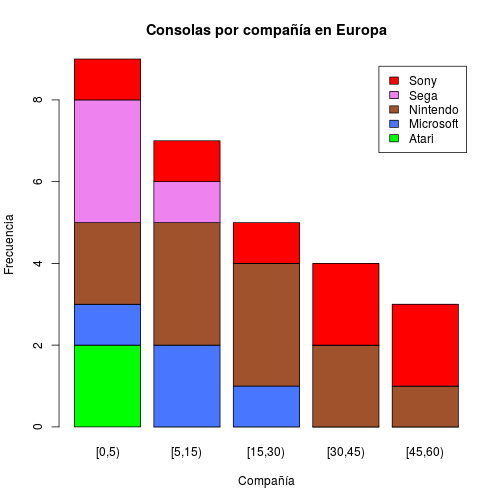
-
22.-Con los datos de la tabla y la gráfica indica cuál es la compañía de la consola preferida en Europa.
-
La compañía preferida en Europa es Nintendo
23.-
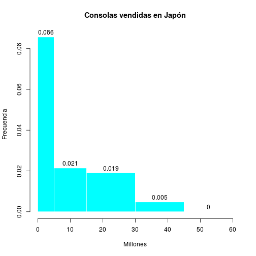

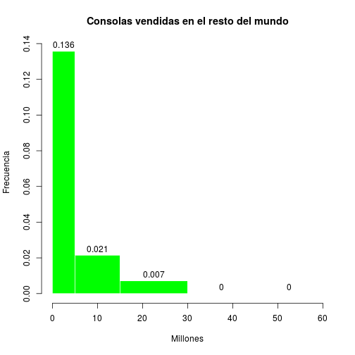
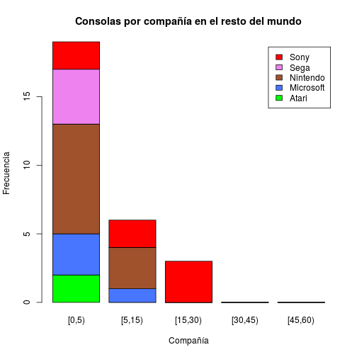
24.-
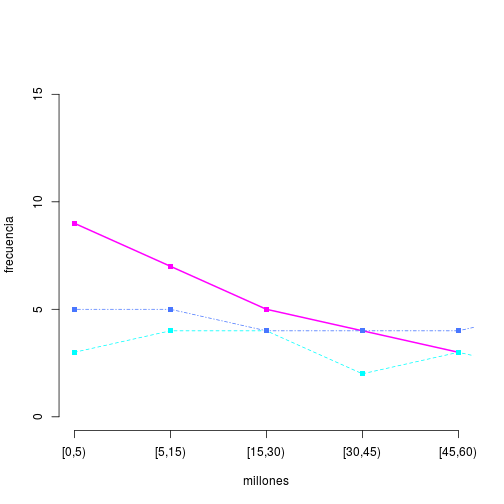
25.-
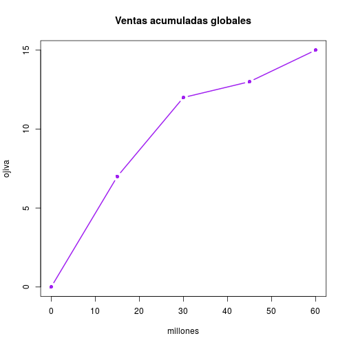
26.-
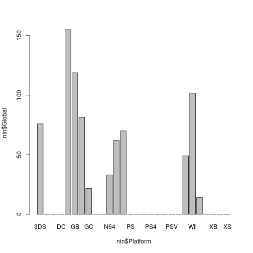
30.-
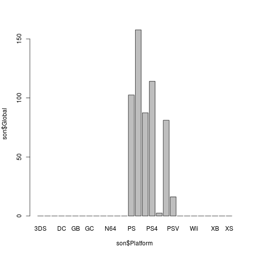